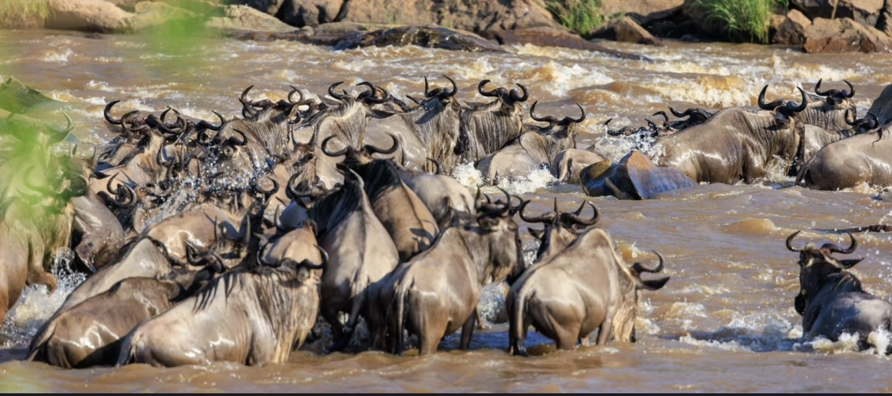
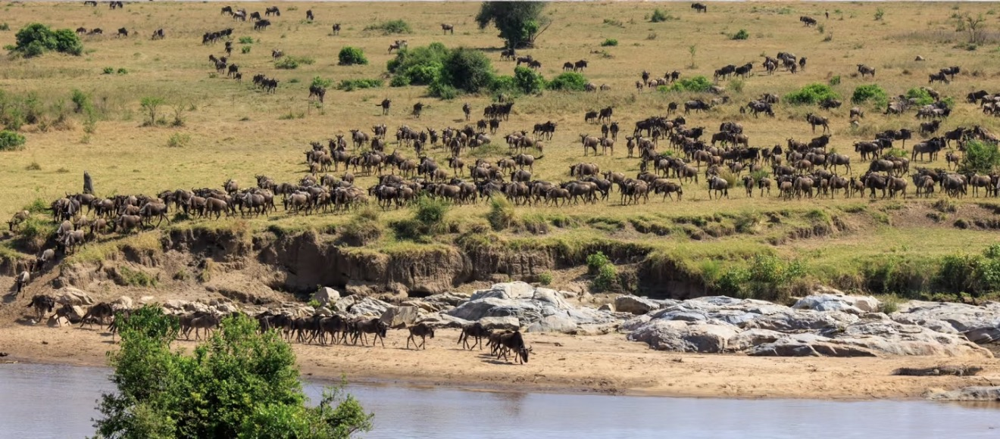
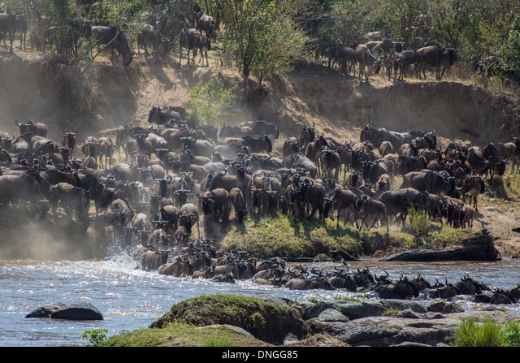
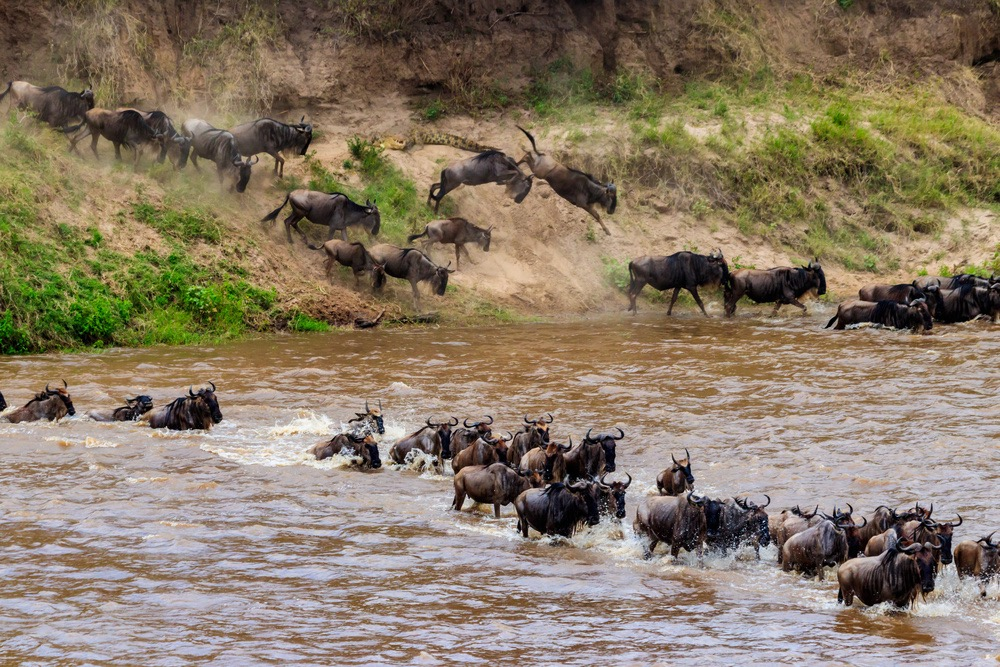

A timeless journey across Serengeti and Masai Mara.
横跨塞伦盖蒂与马赛马拉的生命史诗。

东非塞伦盖蒂—马赛马拉动物大迁徙，是地球上规模最大、最壮观的野生动物迁徙现象之一。
The Great Migration of Serengeti–Masai Mara is one of the largest and most spectacular wildlife movements on Earth.

迁徙的核心驱动力是降雨、青草与水源，数百万角马、斑马与瞪羚随季节不断移动。
Driven by rainfall, fresh pastures and water, millions of wildebeest, zebras and gazelles move in a continuous cycle.

每年初的产仔季，短短数周内将诞生数十万只小角马，是迁徙中最充满生命力的阶段。
During calving season, hundreds of thousands of wildebeest calves are born within weeks, marking the most vibrant phase of the migration.

马拉河穿越，是迁徙中最震撼也最残酷的时刻，象征着自然选择与生命的极限考验。
The dramatic Mara River crossings represent the most intense and iconic moment of the migration — a true test of survival.